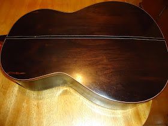
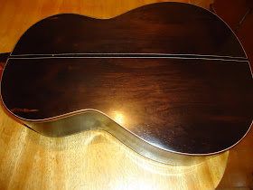

Para darmos inicio ao nosso curso de violão devemos primeiramente conhecer cada parte dele, nome das cordas, e suas peças, pois e muito importante pois se algum dia ele apressentar um defeito saberemos qual peça ou corda devemos trocar.

A tarracha é uma peça que tem um pequeno mecânismo composto por engrenagens. Ela serve para prender as cordas na mão do violão e esse pequeno mecanismo possibilita que as cordas sejam esticadas ou afrouxadas com facilidade. É com ela (esticando ou soltando) que afinamos as cordas do violão.
É a parte onde ficam as tarrachas - que prendem as cordas. O formato da cabeça varia de modelo para modelo ou de luthier para luthier (construtor de instrumentos).
A pestana é uma pequena barra de osso, plástico ou madrepérola, fixada entre o início do braço e a cabeça. Possui um pequeno sulco entalhado para a passagem de cada corda. Isso permite o posicionamento correto das cordas. A pestana serve para apoiar as cordas na extremidade do braço. É o ponto de origem do comprimento das cordas e muitos o consideram como o traste zero.

Os trastes são pequenas barras (geralmente alpaca ou ligas de níquel) montadas sobre a escala e que definem os pontos exatos em que a corda deve ser dividida para obter cada uma das notas. Uma observação muito importante na hora de começar a fazer suas primeiras notas oberve bem se ao aperta a corda o seu dedo NÃO deve ficar em cima do traste, assim o violão não produzira som correto da nota tocada.
Feita de uma madeira diferente do resto do braço, como ébano, a escala é a parte do instrumento onde as cordas são apoiadas quando o músico quer dividir a corda. É sobre a escala que os trastes são montados.
O braço é a parte onde é colada a escala do violão, e tambem onde o musico segura o instrumento para executar as notas.
A quilha é a extremidade mais larga do braço, usada para fixá-lo ao corpo e dar rigidez mecânica à montagem.
 

É literalmente o corpo do violão,atraves dele o som se propaga.

O mosaico é uma peça artística colocada sobre o tampo, ao redor da boca do violão. E a boca é por onde sai o som do violão.
Cavalete é uma peça que fica colada no tampo do violão. O cavalete tem 6 furos para a fixação das cordas.

O rastilho é feito de osso. Ele fica preso em uma fenda que há no cavalete, e é responsável pelo apoio das cordas. Ele também regula a altura da ação das cordas.
As cordas do violão podem ser de aço ou de nylon. observação importante (AS CORDAS DO VIOLÃO SÂO CONTADAS DE BAIXO PARA CIMA)ou seja da mais fina ate a mais grosa
todas elas emitem uma nota quando são tocadas na afinação padrão
1ª CORDA = MI
2ª CORDA = SI
3ª CORDA = SOL
4ª CORDA = RÉ
5ª CORDA = LÁ
6ª CORDA = MI
Para aplicar mais esse assunto veja uma video aula.
ver video aula.